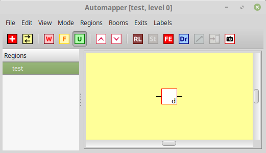
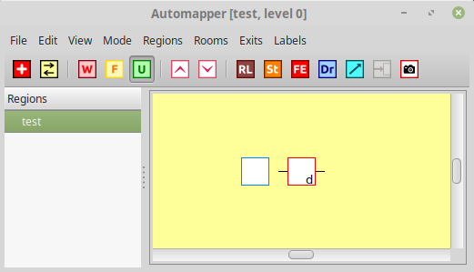
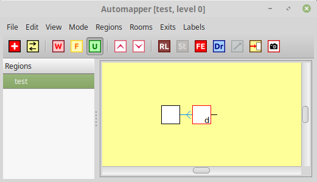
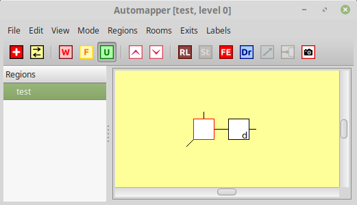

You are in a forest outside the town. To the southwest the path continues toward
a clearing. To the east it leads to a bridge over a river toward a town.
Obvious exits: north, east, southwest
This room from the Dead Souls mudlib is easy to map, at least during the day. But at night, the exit list disappears, and the automapper doesn't recognise it at all.
You are in a forest outside the town. To the southwest the path continues toward
a clearing. To the east it leads to a bridge over a river toward a town.
Well, in this situation you can tell Axmud to look for a line containing You are in a forest outside the town, instead of an exit list. Updating the map is a little tricky, so here's the best way to do it.
Move to a neighbouring room, one that the automapper does recognise, and draw it on the map

Right-click the background at the position where you want to draw the arkward room. In the popup menu, select Add room here.

Right-click the empty room, and select Add pattern > Add unspecified room pattern...
In the dialogue window, add the first few words from the tricky room's description, for example:
You are in a forest outside the town
Axmud expects a pattern (regular expression/regex). If you're not sure what that means, read Section 6 of the Guide.
Axmud won't check this pattern unless the two rooms are connected to each other. A one-way exit will do just fine.
Right-click the west exit, select Connect to click, then click on the arkward (empty) room.

The automapper should now recognise the arkward room. You can test this by moving there (in this example, by going west.)
